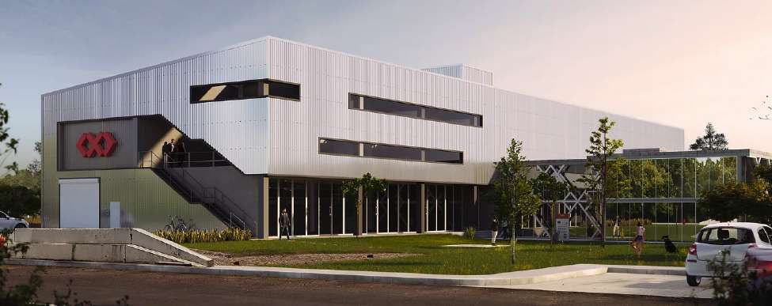

Mixed-use development, 2018. A functional yet fun design among gardens — commercially successful, and a harmony of steel and concrete construction systems.

Functional yet fun among gardens.
From steel to concrete, TARA is a harmony of two construction systems.
TARA is a mix-use development. A functional yet fun design among gardens has made it a commercial success.
From steel to concrete, TARA is a harmony of two construction systems.